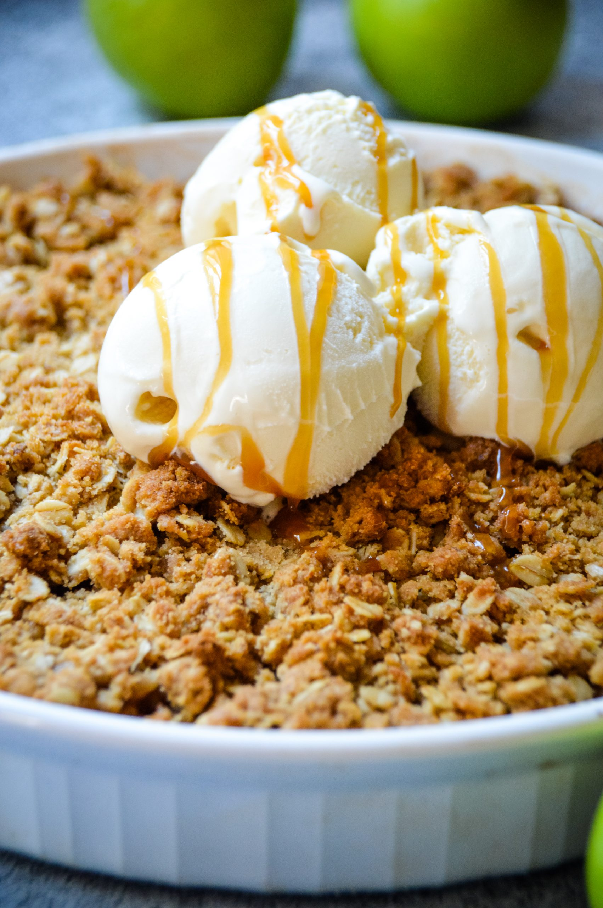

Apple Crisp

Ingredients:
- 4-5 medium-sized apples, peeled, cored, and thinly sliced
- 1/4 cup granulated sugar
- 1 tablespoon lemon juice
- 1 teaspoon ground cinnamon
- 1/4 teaspoon ground nutmeg
- 3/4 cup all-purpose flour
- 1/2 cup rolled oats
- 1/2 cup packed brown sugar
- 1/4 teaspoon salt
- 1/2 cup (1 stick) unsalted butter, cold and cubed
Steps:
- Preheat your oven to 375°F (190°C). Grease a 9x9-inch baking dish or a similar-sized dish.
- In a large bowl, toss the sliced apples with granulated sugar, lemon juice, cinnamon, and nutmeg until well coated. Transfer the apple mixture into the prepared baking dish and spread it out evenly.
- In another bowl, mix together the flour, rolled oats, brown sugar, and salt for the topping. Add the cold cubed butter and use your fingers or a pastry cutter to blend the mixture until it resembles coarse crumbs.
- Sprinkle the topping evenly over the apple mixture in the baking dish.
- Bake in the preheated oven for 35-40 minutes, or until the topping is golden brown and the apples are tender and bubbling.
- Remove from the oven and let it cool slightly before serving.
- Serve warm, optionally with a scoop of vanilla ice cream or a dollop of whipped cream.